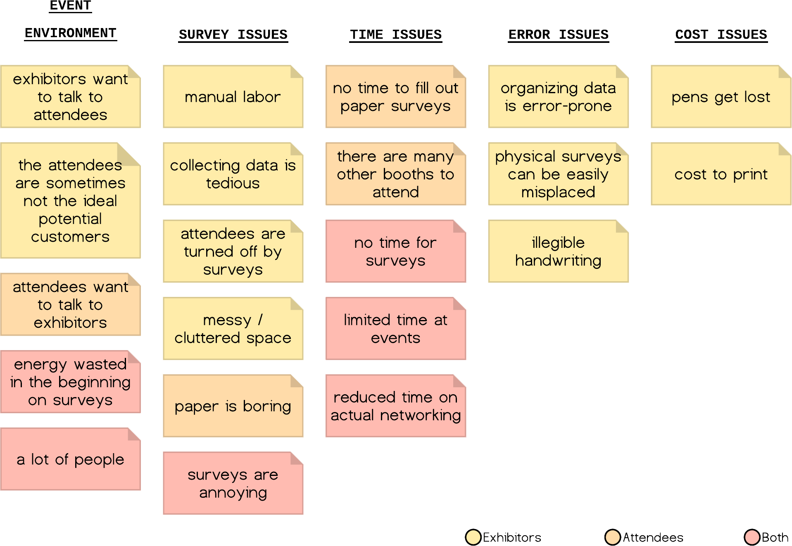
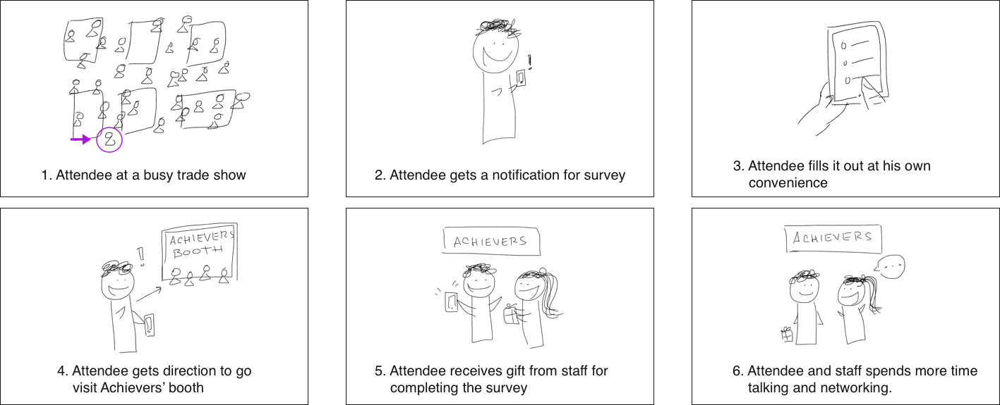

Creating a mobile application survey.
Focusing on user experience and future scalability.
At a Glance
Company
Achievers
Role
Frontend Developer
Responsibilities
Prototyped frontend with HTML/CSS/JS to connect to backend
Finalized frontend codes
Conducted usability tests
Tools
HTML
CSS/Less
JavaScript
Angular.js
About the Project
Every year, Achievers attends and participates in multiple trade show events and the marketing team would manually record attendees' information. This inefficient process not only took away valuable time to converse with potential clients, but it was also highly error-prone.
Creating an application to collect information
Take Your Pick was the created as a solution; it is a mobile app that allows attendees to follow easy step-by-step instructions on entering their information and filling out a simple questionnaire at their convenience at any time.
Using data to drive sales and improve marketing
The collected data then gets transferred to Achievers' CRM system for the sales and marketing team to access. The information is also used to strategically design marketing campaigns to boost traffic to the Achievers' booth at these events.
Design & Development Summary
The first step was identifying the users and understanding the problems that the mobile survey app is aiming to solve. With the problem definition in mind, effectively planning a timeline was critical next step in order to release the app on time.
Since I was responsible for the front-end design and development, creating dynamic, scalable, and reusable components was important for rapid prototyping and user testing.
User Research
To uncover some insights into the issue of collecting physical survey data at trade show events, I talked to Achiever’s marketing department who were able to comment on the following:
 Their personal experiences at trade show events
Their personal experiences at trade show events
 Relay some of the attendees’ feedback regarding their current process of collecting data and information through physical surveys.
Relay some of the attendees’ feedback regarding their current process of collecting data and information through physical surveys.
Defining the terms
| Key Terms | Definitions |
|---|---|
| Users | Achievers’ marketing team and event attendees. |
| Challenge | Physical surveys are outdated and inefficient for collecting information at a fast-paced environment. |
| Solution | An automated data collecting survey that is fast and accurate. |
| Benefits | This will increase the conversation and networking time between Achievers’ marketing team and attendees. |
Creating a web app survey that correctly and quickly capture attendees’ information allows Achievers staff and attendees to have more face-to-face interactions.
Affinity diagram
Storyboard
Rapid Prototyping
The first prototype was building out the front-end development with minimal elements required for user interactions with the survey app; this was to ensure proper working functionalities.
Version 1: the key factor here was the tap-n-go transition between the questions, there wasn’t any selection confirmation or the option of an undo.
Version 2: by adding a next button, it allows the survey taker a chance to re-select their option as long as they are on the same screen. The back button was considered but ruled out because Mobile Action wanted to encourage attendees to quickly fill out the survey, therefore going backwards would take more time for attendees to be indecisive.
Version 3: the third prototype included actual visuals and questions that are in the survey to get the real look and feel for conducting user testings.
User testing
During the user testing phase, the survey app went through at least three cycles of testings: (1) the first official cycle of testing was done within the development team for functional testings, (2) the second user testing was conducted with the entire marketing team to test for alignment with their purpose of collecting data, and (3) the final user testing was conducted with the entire company during a standup daily meeting to test how attendees would understand the survey.
Findings
One of the main tests was to see how people would react about the lack of the back button option. The result was that the majority did not noticed it to be a problem.
An overwhelming response was positive and the majority of the user testers found the survey to be very easy and efficient!
 Email addresses were not validated.
Email addresses were not validated.
 There were issues with the network connections at times. People did not know if the app was loading/broken or if it was their connection error.
There were issues with the network connections at times. People did not know if the app was loading/broken or if it was their connection error.
Solutions
We developed the app to be scalable and reusable for future trade shows and events under different circumstances. We also considered different scenarios and use cases to create screens that will capture each event for a good user experience.
Final Product
The final product had over 7+ screens, each screen asking and collecting different data from the attendees at events. The final screen is customized depending on the participant’s answers on some of the previous screens hence the two different versions.
The following is a video demoing the final prototype that modeled the final delivery: